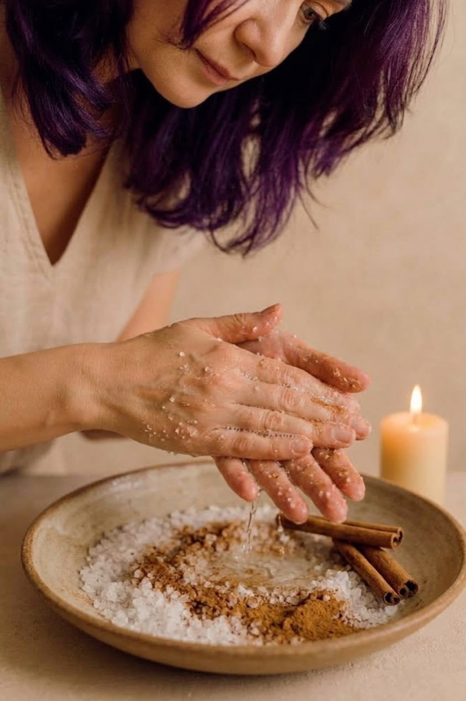
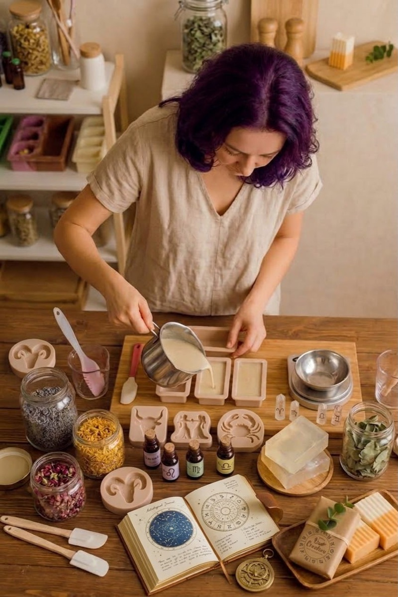
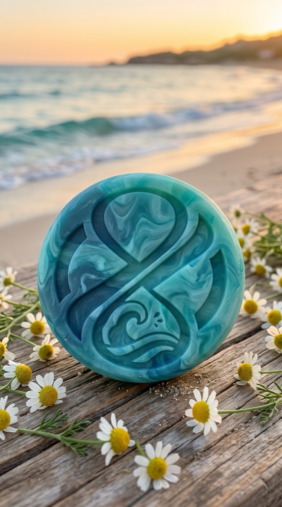
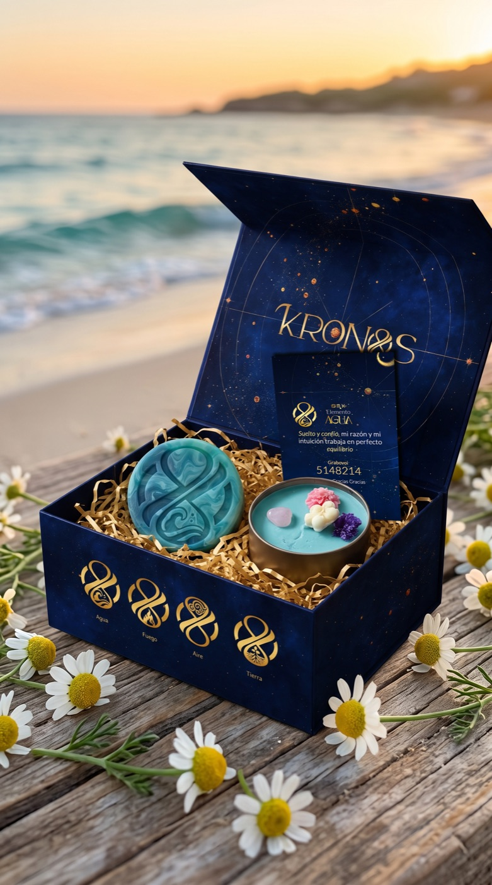

Crecí creyendo que mi lugar era servir. Que mi valor estaba en lo que hacía por los demás, no en lo que yo era. Regalé mi creatividad. Regalé mis ideas. Regalé años enteros a proyectos que no eran míos.
Viví una relación que me enseñó lo que no quería volver a vivir. Y mi cuerpo empezó a hablar de lo que yo no me atrevía a decir en voz alta.
Despertó el Kronos que había en mí.
Empecé por mis propias manos. Sal, canela, una vela encendida, y la intención de volver a mí. No sabía que ahí estaba naciendo algo más grande que un jabón.
Cada jabón que hago hoy lleva esa misma intención. No es solo cuidar la piel — es un ritual para volver a casa, a una misma. Por eso Kronos no es un jabón cualquiera. Es el puente entre lo que soy por dentro y lo que toco todos los días con mis manos.
— Flor, fundadora de Kronos
Kronos une el cielo con tus manos.
Cuatro energías, cuatro rituales. Toca la imagen para ver el kit completo.


Toca para ver el kit ✦ El jabón¿Te ha pasado que una canción, un olor o un recuerdo te hacen llorar sin razón aparente?
Escríbenos por tu kit de Agua